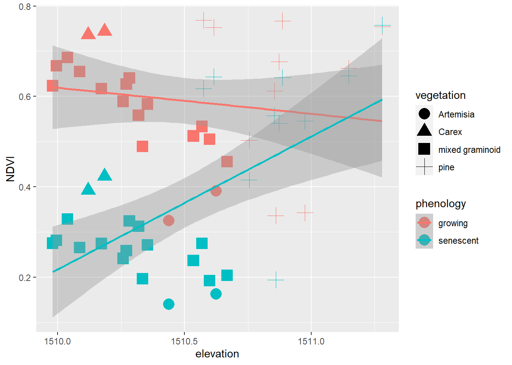
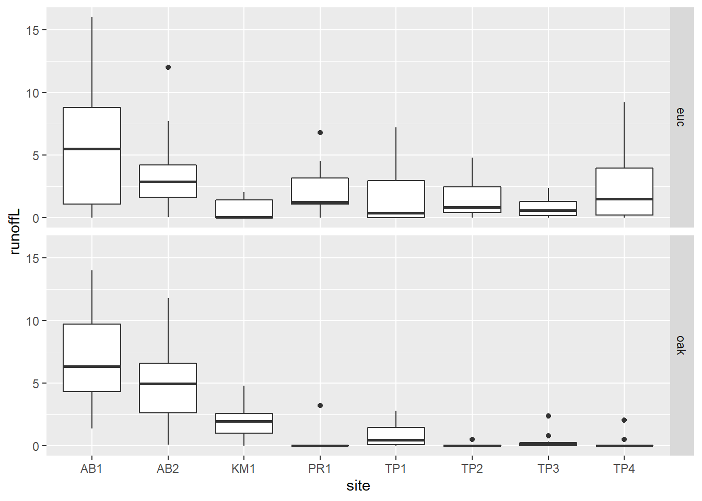
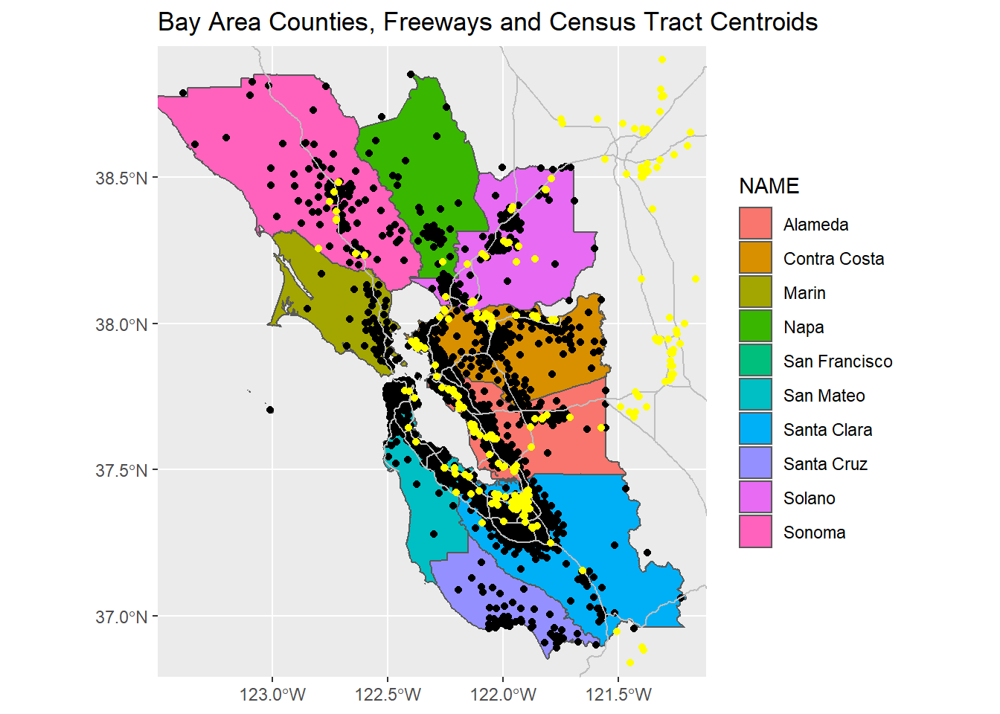

5 Data Transformation
The goal of this section is to continue where we started in the earlier chapter on data abstraction with dplyr to look at more transformational functions, and tidyr adds other tools like pivot tables.
dplyrtools:- joins:
left_join,right_join,inner_join,full_join,semi_join,anti_join - set operations:
intersect,union,setdiff - binding rows and columns:
bind_cols,bind_rows
- joins:
tidyrtools:- pivot tables:
pivot_longer,pivot_wider
- pivot tables:
The term “data wrangling” has been used for what we’re doing with these tools, and the relevant cheat sheet is actually called “Data Wrangling” https://rstudio.com/wp-content/uploads/2015/02/data-wrangling-cheatsheet.pdf
5.1 Data joins
To bring in variables from another data frame based on a common join field.
There are multiple types of joins. Probably the most common is left_join since it starts
from the data frame (or sf) you want to continue working with and bring in data
from an additional source. You’ll retain all records of the first data set.
For any non-matches, NA is assigned. [air_quality]
library(tidyverse)
library(iGIScData)
library(sf)
csvPath <- system.file("extdata", "CA_MdInc.csv", package = "iGIScData")
income <- read_csv(csvPath) %>%
dplyr::select(trID, HHinc2016) %>%
mutate(HHinc2016 = as.numeric(HHinc2016),
joinid = str_c("0", trID)) %>%
dplyr::select(joinid, HHinc2016)
census <- BayAreaTracts %>%
left_join(income, by = c("FIPS" = "joinid")) %>%
dplyr::select(FIPS, POP12_SQMI, POP2012, HHinc2016)
head(census %>% st_set_geometry(NULL))## FIPS POP12_SQMI POP2012 HHinc2016
## 1 06001400100 1118.797 2976 177417
## 2 06001400200 9130.435 2100 153125
## 3 06001400300 11440.476 4805 85313
## 4 06001400400 14573.077 3789 99539
## 5 06001400500 15582.609 3584 83650
## 6 06001400600 13516.667 1622 61597Other joins are:
right_joinwhere you end up retaining all the rows of the second data set and NA is assigned to non-matchesinner_joinwhere you only retain records for matchesfull_joinwhere records are retained for both sides, and NAs assigned to non-matches
Right join example We need to join NCDC monthly climate data for all California weather stations to a selection of 82 stations that are in the Sierra.
- The monthly data has 12 rows (1/month) for each station
- The right_join gets all months for all stations, so we weed out the non-Sierra stations by removing NAs from a field only with Sierra station data [
sierra]
sierra <- right_join(sierraStations, CA_ClimateNormals, by="STATION") %>%
filter(!is.na(STATION_NA)) %>% dplyr::select(-STATION_NA)
head(sierra %>% filter(DATE == "01") %>% dplyr::select(NAME, ELEVATION, `MLY-TAVG-NORMAL`), n=10)## # A tibble: 10 x 3
## NAME ELEVATION `MLY-TAVG-NORMAL`
## <chr> <dbl> <dbl>
## 1 GROVELAND 2, CA US 853. 5.6
## 2 CANYON DAM, CA US 1390. 0.2
## 3 KERN RIVER PH 3, CA US 824. 7.6
## 4 DONNER MEMORIAL ST PARK, CA US 1810. -1.9
## 5 BOWMAN DAM, CA US 1641. 3
## 6 BRUSH CREEK RANGER STATION, CA US 1085. NA
## 7 GRANT GROVE, CA US 2012. 1.9
## 8 LEE VINING, CA US 2072. -1.2
## 9 OROVILLE MUNICIPAL AIRPORT, CA US 57.9 7.7
## 10 LEMON COVE, CA US 156. 8.6The exact same thing however could be accomplished with an inner_join and it doesn’t required removing the NAs:
sierraAlso <- inner_join(sierraStations, CA_ClimateNormals, by="STATION") %>%
dplyr::select(-STATION_NA)5.2 Set Operations
Set operations compare two data frames (or vectors) to handle observations or rows that are the same for each, or not the same. The three set methods are:
dplyr::intersect(x,y)retains rows that appear in both x and ydplyr::union(x,y)retains rows that appear in either or both of x and ydplyr::setdiff(x,y)retains rows that appear in x but not in y
[generic_methods]
squares <- (1:10)^2
evens <- seq(0,100,2)
squares## [1] 1 4 9 16 25 36 49 64 81 100evens## [1] 0 2 4 6 8 10 12 14 16 18 20 22 24 26 28 30 32 34 36 38 40 42 44 46 48 50 52 54 56 58 60 62 64 66
## [35] 68 70 72 74 76 78 80 82 84 86 88 90 92 94 96 98 100intersect(squares,evens)## [1] 4 16 36 64 100sort(union(squares,evens))## [1] 0 1 2 4 6 8 9 10 12 14 16 18 20 22 24 25 26 28 30 32 34 36 38 40 42 44 46 48 49 50 52 54 56 58
## [35] 60 62 64 66 68 70 72 74 76 78 80 81 82 84 86 88 90 92 94 96 98 100sort(setdiff(squares,evens))## [1] 1 9 25 49 815.3 Binding Rows and Columns
These dplyr functions are similar to cbind and rbind in base R, but always
creates data frames. For instance, cbind usually creates matrices, and make all vectors
the same class. Note that in bind_cols, the order of data in rows must be the same.
states <- bind_cols(abb=state.abb,
name=state.name,
region=state.region,
state.x77)
head(states)## # A tibble: 6 x 11
## abb name region Population Income Illiteracy `Life Exp` Murder `HS Grad` Frost Area
## <chr> <chr> <fct> <dbl> <dbl> <dbl> <dbl> <dbl> <dbl> <dbl> <dbl>
## 1 AL Alabama South 3615 3624 2.1 69.0 15.1 41.3 20 50708
## 2 AK Alaska West 365 6315 1.5 69.3 11.3 66.7 152 566432
## 3 AZ Arizona West 2212 4530 1.8 70.6 7.8 58.1 15 113417
## 4 AR Arkansas South 2110 3378 1.9 70.7 10.1 39.9 65 51945
## 5 CA California West 21198 5114 1.1 71.7 10.3 62.6 20 156361
## 6 CO Colorado West 2541 4884 0.7 72.1 6.8 63.9 166 103766To compare, note that cbind converts numeric fields to character when any other
field is character, and character fields are converted to character integers where there are any repeats,
which would require manipulating them into factors:
states <- as_tibble(cbind(abb=state.abb,
name=state.name,
region=state.region,
division=state.division,
state.x77))
head(states)## # A tibble: 6 x 12
## abb name region division Population Income Illiteracy `Life Exp` Murder `HS Grad` Frost Area
## <chr> <chr> <chr> <chr> <chr> <chr> <chr> <chr> <chr> <chr> <chr> <chr>
## 1 AL Alabama 2 4 3615 3624 2.1 69.05 15.1 41.3 20 50708
## 2 AK Alaska 4 9 365 6315 1.5 69.31 11.3 66.7 152 566432
## 3 AZ Arizona 4 8 2212 4530 1.8 70.55 7.8 58.1 15 113417
## 4 AR Arkansas 2 5 2110 3378 1.9 70.66 10.1 39.9 65 51945
## 5 CA California 4 9 21198 5114 1.1 71.71 10.3 62.6 20 156361
## 6 CO Colorado 4 8 2541 4884 0.7 72.06 6.8 63.9 166 1037665.4 Pivotting data frames
Pivot tables are a popular tool in Excel, allowing you to transform your data to be more
useful in a particular analysis. A common need to pivot is 2+ variables with the same data where the variable name should be a factor. Tidyr has pivot_wider and pivot_longer.
pivot_widerpivots rows into variables.pivot_longerpivots variables into rows, creating factors.
In our meadows study cross-section (Davis et al. 2020) created by intersecting normalized difference vegetation index (NDVI) values from multispectral drone imagery with surveyed elevation and vegetation types (xeric, mesic, and hydric), we have fields NDVIgrowing from a July 2019 growing season and NDVIsenescent from a September 2020 dry season, but would like ‘growing’ and ‘senescent’ to be factors with a single NDVI variable. This is how we used pivot_longer to accomplish this, using data from the iGIScData data package [NDVI]:
XSptsPheno <- XSptsNDVI %>%
pivot_longer(cols = starts_with("NDVI"),
names_to = "phenology", values_to = "NDVI") %>%
mutate(phenology = str_sub(phenology, 5, str_length(phenology)))Then to do the opposite use pivot_wider:
XSptsPheno %>%
pivot_wider(names_from = phenology, names_prefix = "NDVI",
values_from = NDVI)## # A tibble: 29 x 6
## DistNtoS elevation vegetation geometry NDVIgrowing NDVIsenescent
## <dbl> <dbl> <chr> <chr> <dbl> <dbl>
## 1 0 1510. Artemisia c(718649.456, 4397466.714) 0.326 0.140
## 2 16.7 1510. mixed graminoid c(718649.4309, 4397450.077) 0.627 0.259
## 3 28.6 1510. mixed graminoid c(718649.413, 4397438.222) 0.686 0.329
## 4 30.5 1510. mixed graminoid c(718649.4101, 4397436.33) 0.668 0.282
## 5 31.1 1510. mixed graminoid c(718649.4092, 4397435.732) 0.655 0.266
## 6 33.4 1510. mixed graminoid c(718649.4058, 4397433.441) 0.617 0.274
## 7 35.6 1510. mixed graminoid c(718649.4025, 4397431.249) 0.623 0.275
## 8 37 1510. mixed graminoid c(718649.4004, 4397429.854) 0.589 0.242
## 9 74 1510. mixed graminoid c(718649.3448, 4397392.994) 0.641 0.325
## 10 101 1510. mixed graminoid c(718649.3042, 4397366.097) 0.558 0.312
## # ... with 19 more rowsXSptsPheno## # A tibble: 58 x 6
## DistNtoS elevation vegetation geometry phenology NDVI
## <dbl> <dbl> <chr> <chr> <chr> <dbl>
## 1 0 1510. Artemisia c(718649.456, 4397466.714) growing 0.326
## 2 0 1510. Artemisia c(718649.456, 4397466.714) senescent 0.140
## 3 16.7 1510. mixed graminoid c(718649.4309, 4397450.077) growing 0.627
## 4 16.7 1510. mixed graminoid c(718649.4309, 4397450.077) senescent 0.259
## 5 28.6 1510. mixed graminoid c(718649.413, 4397438.222) growing 0.686
## 6 28.6 1510. mixed graminoid c(718649.413, 4397438.222) senescent 0.329
## 7 30.5 1510. mixed graminoid c(718649.4101, 4397436.33) growing 0.668
## 8 30.5 1510. mixed graminoid c(718649.4101, 4397436.33) senescent 0.282
## 9 31.1 1510. mixed graminoid c(718649.4092, 4397435.732) growing 0.655
## 10 31.1 1510. mixed graminoid c(718649.4092, 4397435.732) senescent 0.266
## # ... with 48 more rowsXSptsPheno %>%
ggplot() +
geom_point(aes(elevation, NDVI, shape=vegetation,
color = phenology), size = 5) +
geom_smooth(aes(elevation, NDVI,
color = phenology), method="lm")
Pivots turn out to be commonly useful. Runoff graphing from the Eucalyptus/Oak study (Thompson, Davis, and Oliphant 2016) also benefited
from a pivot_longer [eucoak]:
eucoakrainfallrunoffTDR %>%
pivot_longer(cols = starts_with("runoffL"),
names_to = "tree", values_to = "runoffL") %>%
mutate(tree = str_sub(tree, str_length(tree)-2, str_length(tree))) %>%
ggplot() + geom_boxplot(aes(site, runoffL)) +
facet_grid(tree ~ .)
Combining a pivot with bind_rows to create a runoff/rainfall scatterplot colored by tree
runoffPivot <- eucoakrainfallrunoffTDR %>%
pivot_longer(cols = starts_with("runoffL"),
names_to = "tree", values_to = "runoffL") %>%
mutate(tree = str_sub(tree, str_length(tree)-2, str_length(tree)),
Date = as.Date(date, "%m/%d/%Y"))
euc <- runoffPivot %>%
filter(tree == "euc") %>%
mutate(rain_subcanopy = rain_euc,
slope = slope_euc, aspect = aspect_euc,
surface_tension = surface_tension_euc,
runoff_rainfall_ratio = runoff_rainfall_ratio_euc) %>%
dplyr::select(site, `site #`, tree, Date, month, rain_mm,
rain_subcanopy, slope, aspect, runoffL,
surface_tension, runoff_rainfall_ratio)
oak <- runoffPivot %>%
filter(tree == "oak") %>%
mutate(rain_subcanopy = rain_oak,
slope = slope_oak, aspect = aspect_oak,
surface_tension = surface_tension_oak,
runoff_rainfall_ratio = runoff_rainfall_ratio_oak) %>%
dplyr::select(site, `site #`, tree, Date, month, rain_mm,
rain_subcanopy, slope, aspect, runoffL,
surface_tension, runoff_rainfall_ratio)
bind_rows(euc, oak) %>%
ggplot() +
geom_point(mapping = aes(x = rain_mm, y = runoffL, color = tree)) +
geom_smooth(mapping = aes(x = rain_mm, y= runoffL, color = tree),
method = "lm") +
scale_color_manual(values = c("seagreen4", "orange3"))
Using pivot_wider with traffic stop data (Engel 2020)
library(lubridate)
csvPath <- system.file("extdata","MS_trafficstops_bw_age.csv", package="iGIScData")
trafficStops <- read_csv(csvPath) %>%
mutate(year = year(stop_date))
trafficCounts <- trafficStops %>%
count(year,violation_raw)
trafficCounts %>%
pivot_wider(names_from = year,
values_from = n)## # A tibble: 19 x 5
## violation_raw `2013` `2014` `2015` `2016`
## <chr> <int> <int> <int> <int>
## 1 ?? 5018 4368 2935 682
## 2 Careless driving 607 561 709 270
## 3 Child or youth restraint not used properly as required 1313 873 709 286
## 4 Driving while license suspended 3258 2306 2455 516
## 5 Driving wrong way 40 33 38 14
## 6 Expired or no non-commercial driver license or permit 1433 984 1166 358
## 7 Failure to comply with financial responsibility law 1 1 NA NA
## 8 Failure to maintain required liability insurance 7096 5193 7889 2874
## 9 Failure to obey sign or traffic control device 607 356 388 122
## 10 Failure to yield right of way (FTY ROW) 292 206 203 65
## 11 Following too closely 179 117 153 41
## 12 Improper passing 178 155 178 71
## 13 Improper turn 65 54 67 22
## 14 Operating without equipment as required by law 967 744 964 425
## 15 Other (non-mapped) 421 289 365 129
## 16 Reckless driving 233 229 284 125
## 17 Seat belt not used properly as required 7027 5768 4912 2547
## 18 Speeding 713 948 978 167
## 19 Speeding - Regulated or posted speed limit and actual speed 39818 31888 38721 15044Note that this table is not tidy, but provides a useful table for a report.